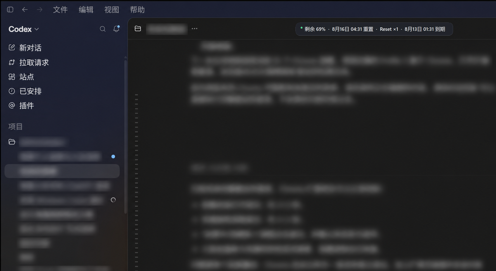

See the limit.
Understand the pace.
A glanceable overlay and a local Quota Center for Codex Desktop on Windows.
- Glance + depth
- One line while working. Full context on demand.
- Pace forecast
- Compare recent burn with a safe pace to reset.
- Private by default
- Session-only history until you opt in.

From a quota number to a usable plan.
-
1
Find Codex
Detect the official Codex Desktop window without reading its title.
-
2
Read local signals
Ask the documented local App Server for quota and aggregate activity.
-
3
Make the pace clear
Estimate a safe burn rate, forecast risk, then stay out of the way.
One line when busy.
A full picture when planning.
Keep the overlay compact, then open Quota Center for every reported window, reset countdown, recent trend, activity, and a confidence-rated exhaustion forecast.
- Compact, balanced, and insight overlay modes
- Optional low-quota and pace-risk alerts
- Opt-in, bounded local history you can clear anytime
No account scraping.
No secrets uploaded.
Quota reads, forecasts, foreground detection, and placement run locally. History stays in memory unless you explicitly enable a bounded local file.
The site has no analytics, cookies, forms, or tracking pixels.
Read the full privacy policy →Download for Windows
Windows 10/11
x64 setup installer
The Windows package is unsigned. Verify its SHA-256 file on GitHub before opening.
See system requirements →